UDN
Search public documentation:
TerrainAdvancedTexturesKR
English Translation
日本語訳
中国翻译
Interested in the Unreal Engine?
Visit the Unreal Technology site.
Looking for jobs and company info?
Check out the Epic games site.
Questions about support via UDN?
Contact the UDN Staff
日本語訳
中国翻译
Interested in the Unreal Engine?
Visit the Unreal Technology site.
Looking for jobs and company info?
Check out the Epic games site.
Questions about support via UDN?
Contact the UDN Staff
터레인 고급 텍스처
문서 변경내역: David Green 원저.
- 터레인 고급 텍스처
- 개요
- 터레인 텍스처링의 제한사항
- 인스턴싱에 대한 머티리얼 디자인하기
- 머티리얼 표현식의 기본 단위
- 복합 머티리얼 디자인 노트
- 디테일 텍스처: 근접 거리 세부묘사 추가
- NormalMap 텍스처: 범프 디테일 추가
- 멀티-UV 믹싱: 스칼라 믹싱을 통해 타일링 감소시키기
- 랜덤 타일링 마스크: 타일링을 감소시키기 위해 텍스처 매핑 랜덤화
- 매크로 텍스처: 다양성을 위한 텍스처 블렌딩
- 수퍼 마스크: 버텍스 레벨 이상으로 터레인의 묘사 증가시키기
- 텍스처 패킹: 대형 텍스처 타일 세트 구현하기
- 1:1 오버레이: 여러 고해상도 텍스처를 터레인 전체에 타일하기
개요
- Adobe PhotoShop과 같은 소프트웨어를 사용한 디지털 이미지의 제작 및 편집
- 이미지의 색상 채널(RGB)과 알파 채널의 제작 및 편집
- 컬러 및 회색조 이미지가 무엇인지, 또한 그 차이점과 사용법
- 텍스처 가져오기 및 텍스처 속성 설정하기
- 머티리얼의 기초
- 머티리얼 및 머티리얼 편집기 의 제작 및 사용
- 터레인 디자인 - TerrainMaterials 및 TerrainLayerSetups
- 터레인 사용 및 터레인 설정
- 터레인 편집 대화 상자의 사용

터레인 텍스처링의 제한사항
텍스처 스케일
대부분의 경우, 터레인에 적용되는 텍스처용 UV 스케일은 근접장 뷰에서 텍스처 스타일이 비교적 정확하게 보이도록 조절됩니다. 풀잎과 작은 바위는 실제와 비슷한 크기로 스케일 조절됩니다. 이것과 관련된 문제점에는 원거리 뷰로 볼 시 타일링이 좀 더 확연히 나타나고, 특정 크기의 텍스처에는 일정한 양의 세부묘사와 다양성만이 포함될 수 밖에 없게됩니다. 일반적으로 텍스처의 해상도가 낮을수록 타일링은 더욱 분명해지고 세부묘사 또한 훨씬 감소됩니다. 텍스처 UV 스케일이 작게 설정되어 있다면 대부분의 경우 타일링은 아주 분명 해집니다. 텍스처 UV 스케일이 크게 설정된 경우, 타일링은 별로 눈에 띄지 않고 먼 장소의 세부묘사가 좀 더 다양하게 나타나지만, 일반적으로 카메라에 근접한 터레인은 희미하게 보이고 풀 또는 바위와 같은 해당 텍스처에 있는 객체의 세부묘사 스케일이 실제 현실에서 보다 크게 보이게 됩니다.텍스처 타일링
터레인에서 사용할 목적으로 생성된 텍스처는 보통 512x512, 1024x1024, 또는 2048x2048 해상도이므로 광범위하게 다양한 세부묘사를 담고 있고 시각적 타일링 결함이 없는 표면에 걸쳐 매핑되는 텍스처를 얻는 것은 어려운 일입니다. 대부분의 경우, 텍스처 전반에 걸친 색조(hue) 또는 밝기의 변화와 같은 텍스처의 시각적인 차이 또는 텍스처 중간에 있는 큰 암석과 같은 특정 세부묘사는 카메라 뷰에 따라서 줌아웃하듯 멀리서 볼 시 타일링을 더 두드러지게 만드는 원인이 될 수 있습니다.필레이트
터레인는 일반적으로 대형 야외 장면을 제작하는 데 사용되기 때문에 화면의 상당 부분(일반적으로 50%에서 75%)을 포함합니다. 터레인 머티리얼의 복잡도가 증가함에 따라, 화면에 렌더링되는 텍셀에 사용되는 텍스처링을 제작하기 위해 좀 더 강력한 프로세스 파워를 필요로할 수 있습니다. 비디오 어댑터의 GPU와 필레이트 속도가 느리면 렌더링 시간은 길어지고 성능도 떨어지게 됩니다.The Unreal Engine
Unreal Engine의 터레인 시스템에는 적용될 수 있는 머티리얼의 수와 실행될 수 있는 쉐이더 명령의 수에는 구체적인 제한이 있습니다. 정확한 수는 레이어 디자인과 특정 비디오 어댑터 하드웨어의 제한사항에 따라 변합니다. Shader Model 2와 3의 비디오 어댑터는 16개의 텍스처 샘플러를 지원합니다. 각 터레인 머티리얼에 사용되는 각각의 고유 텍스처는 이러한 샘플러 중 하나를 필요로 합니다. 그러나 대개의 경우 Shader Model 2 비디오 어댑터는 Shader Model 3 비디오 어댑터만큼 복잡한 터레인 머티리얼 레이어 셋업을 렌더링할 수 없다는 것에 주의하십시오. 텍스처 샘플러에 대해서는 본 튜토리얼의 후반부에서 아주 상세하게 다뤄질 것입니다. 이러한 하드웨어 및 렌더링에서의 제한사항으로 인해 원하는 텍스처링 결과를 얻으려면 최소의 개별 텍스처와 머티리얼, 그리고 가능한 최소 개수의 명령을 사용하게 전체 터레인 머티리얼 셋업을 디자인 하는 것이 현명합니다.인스턴싱에 대한 머티리얼 디자인하기

머티리얼 표현식의 기본 단위
확산 텍스처 밝기와 틴트
터레인에서의 텍스처 샘플의 수와 게임 타이틀의 총 텍스처 개수를 줄이려면 밝기와 틴트 수정자를 제작하면 됩니다. 연한 갈색 및 진한 갈색의 모래에서와 같이 밝기 또는 틴트를 변화시켜 텍스처 파일의 여러 버전을 만드는 대신에, VectorParameter 표현식의 값을 사용하여 RGB 채널을 수정하는 Multiply 표현식을 사용하여 머티리얼내의 텍스처를 간단하게 수정할 수 있습니다. 텍스처의 밝기와 틴트를 변경하려면 VectorParameter RGB 속성을 변경하십시오. 1.0,1.0,1.0이 기본값입니다. VectorParameter 표현식의 A(알파) 속성 값은 변경하지 않고 기본값인 1.0을 그대로 사용할 수 있습니다.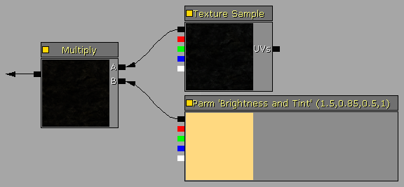
확산 디테일 텍스처의 밝기
대형 스케일 확산 텍스처의 근접장 뷰 품질을 보완하기 위해 회색조 디테일 텍스처를 사용할 시, 해당 확산 텍스처의 전반적인 밝기를 변경시키지 않게 디테일 텍스처의 밝기 레벨을 조절하는 것이 종종 필요합니다. UnpackMax에 대한 디테일 텍스처의 속성을 설정하여 이것을 이루어내는 것이 가능하지만 밝기는 해당 값으로 고정됩니다. ScalerParameter식의 값으로 RGBA 채널을 변경하는 Multiply 표현식을 사용하여 디테일 텍스처의 모든 인스턴스에 대한 밝기를 필요에 따라 변경할 수 있습니다. 텍스처의 밝기를 변경하려면 ScalerParameter 속성을 변경합니다. 1.0이 기본값입니다.
NormalMap 디테일 텍스처의 블렌드와 강도
대부분의 경우 NormalMaps는 험준한 바위 절벽 면과 바위산과 같은 터레인에 사용되는 대형 바위 텍스처의 현실감을 대폭 향상시킬 수 있습니다. 텍스처 크기 제한과 1024x1024 또는 2048x2048의 일반적인 텍스처 해상도로 인해 확산 암석 텍스처는 실제 상황의 시각적인 모습을 시뮬레이션하기 위해 TerrainMaterial에서 큰 크기로 종종 스케일 조절됩니다. 플레이어가 이러한 암석 텍스처에 접근할 수 있는 경우, 대형 텍스처 스케일은 일반적으로 희미하고 큰 픽셀된 암석처럼 보여집니다. 확산 암석 텍스처에 디테일 텍스처를 사용하는 것 이외에 디테일 텍스처는 또한 NormalMap에서도 사용될 수 있습니다. 2개의 NormalMap 텍스처를 혼합할 경우, 한 텍스처의 Blue 채널을 반드시 제거해야 합니다. 그렇지 않으면 범프 렌더링을 기본적으로 감소시킵니다. VectorParameter와 Multiply 표현식은 주요 NormalMap 텍스처와 디테일 NormalMap 텍스처를 혼합하기 전에 디테일 NormalMap 질감에서 Blue 채널을 제거합니다. VectorParameter 표현식의 R과 G 채널 또한 디테일 텍스처의 범프 강도를 증가시키기 위해 1.0 이상으로 조정될 수 있습니다.
마스크 블렌드 레벨
아래에서 설명된 사용자 지정 머티리얼의 일부는 텍스처 블렌딩과 같은 여러 기능을 수행하기 위해 회색조 스케일 마스크를 활용합니다. Multiply 표현식을 제어하는 ScalerParameter 표현식을 활용하여 단순화된 값 조정 및 인스턴스화를 위해 블렌드 가중치(weight) 마스크가 머티리얼에서 직접 변경될 수 있습니다. Clamp 표현식과 최대 노드에 연결된 상수인 1은 마스크의 범위가 항상 0.0과 1.0 사이에 있도록 합니다.
Desaturation 표현식
Desaturation 표현식은 색상 채도를 감소시키려 기존의 텍스처를 변경하는 데 사용됩니다. 이것은 중간색의 바위 또는 시든 풀처럼 터레인 지질 시스템에 좀 더 자연스러운 음영의 조화를 제공하기 위해 터레인 텍스처를 변경하는 데 사용될 수 있습니다. 또한, 색상, 채도, 명도 등을 변경시키기 위해 Materials에서 수정된 유사한 텍스처를 재사용하여 출시된 비디오 게임 타이틀 또는 맵에 필요한 텍스처의 총 수를 감소시킬 수 있습니다.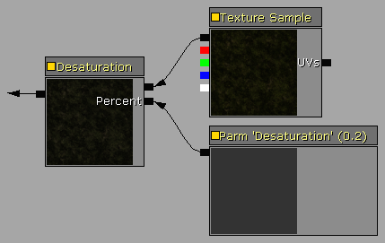
복합 머티리얼 디자인 노트
명명 규칙
패키지 구성을 개선하고 엔진 객체의 재사용을 더욱 쉽게하기 위해 간단하지만 엄격한 명명 규칙이 만들어진 모든 에셋에 대해 사용되야 합니다. 권장되는 명명 규칙 시스템은 다음과 같습니다.| TX_TextureName_D | 확산 텍스처 |
| TX_TextureName_DO | 알파 채널에 불투명을 가진 확산 텍스처 |
| TX_TextureName_DS | 알파 채널에 반사(specular)를 가진 확산 텍스처 |
| TX_TextureName_N | 노멀맵(normalmap) 텍스처 |
| TX_TextureName_O | 불투명 텍스처 |
| TX_TextureName_D | 반사 텍스처 |
| MAT_MaterialName | 머티리얼 |
| TM_MaterialName | 터레인 머티리얼 |
| TLS_SetupName | 터레인 레이어 셋업 |
| TX_Detail[이름] | 디테일 텍스처 8비트 회색조 또는 압축된 비트평면 | 예: TX_DetailRock1 |
| TX_Macro[이름] | 매크로 텍스처 8비트 회색조 또는 압축된 비트평면 | 예: TX_MacroDirt |
| TX_Mask[이름] | 마스크 텍스처 8비트 회색조 또는 압축된 비트평면 | 예: TX_MaskRandom |
주석 그룹 및 표현식 설명
복잡한 머티리얼 시스템을 구성할 때, 머티리얼 표현식인 Description 기능과 Comment 객체를 사용하는 것이 현명한 선택입니다. 이것은 복잡한 머티리얼 레이아웃의 구성 및 가독성(readability)을 대폭 개선시킬 것입니다. 각 표현식은 "Desc"라는 설명 속성을 포함합니다. 이 속성은 특정 표현식의 함수 또는 값에 주석을 달기 위해 텍스트 문자열로 설정될 수 있습니다. 머티리얼 편집기 작업 공간에서 마우스 오른쪽 버튼을 클릭하고 팝업 메뉴에서 Comment 를 선택하거나 "c"를 눌러 주석 객체를 추가할 수 있습니다. 주석 객체는 머티리얼 함수 섹션의 그래픽적 그룹 상자 를 제공하기 위해 기존의 여러 표현식 주위를 둘러쌀 수 있습니다. 새로운 주석 객체를 추가하면 현재 선택된 표현식 세트 주위를 둘러싸기 위해 자동으로 크기를 조정합니다. 표현식 설명: 주석 상자:
주석 상자:

지정된 셋업 변경하기
터레인 객체에 할당된 TerrainLayerSetup에 배열에서의 머티리얼 항목의 삽입 및 삭제, 배열에서의 항목 순서 변경, 1개 이상 머티리얼 항목의 Noise, Height, Slope 속성을 변경하는 것과 같은 상당한 변경을 실행할 시, 먼저 터레인 객체에서 TerrainLayerSetup의 지정을 해제하여 상당한 성능적 향상이 실현될 수 있습니다. 따라서 렌더된 터레인 뷰의 화면상의 시각적 피드백을 잃어 버리기 때문에, 일반적으로 항목의 삽입이나 삭제 또는 Noise, Height, Slope 속성의 올바른 변화 값을 이미 알고 있는 경우에 이용하는 것이 좋습니다. 그러나 여러 머티리얼 항목의 삭제와 같은 상당한 변경 사항의 경우, 터레인 객체에서 TerrainLayerSetup의 할당을 해제시키고 변경 사항을 실행한 다음, TerrainLayerSetup을 다시 할당시키는 것이 종종 더 빠릅니다. 맵 파일에 직접 에셋을 저장하는 경우, 맵을 저장하기 전에 터레인 객체에 TerrainLayerSetups를 다시 할당하도록 하십시오. 그렇지 않으면, 사용되지 않은 자동 에셋 컬링 이 맵 파일에서 사용되지 않는 에셋을 제거합니다.터레인 머티리얼 다시 캐시화시키기
Materials, TerrainMaterials, TerrainLayerSetups, 이러한 객체의 레이아웃 순서를 변경하는 것과 같이 터레인 머티리얼 시스템을 변경하면, 현재 편집기 뷰포트에서 렌더된 터레인은 이러한 변경 사항을 나타내기 위해 업데이트하지 않을 수 있습니다. 터레인 편집 대화 상자를 표시하기 위해 왼쪽 도구 상자 아이콘에서 Terrain Editing Mode 버튼을 클릭한 다음, Recache Terrain Materials "RM" 버튼을 클릭하여 재캐시화를 강행합니다. Recache terrain shaders 프롬프트 메시지가 사라지자 마자 터레인 시스템은 업데이트된 머티리얼 셋업을 사용할 수 있습니다.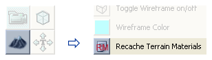
GPU 쉐이더 지원
최종 사용자 하드웨어의 이전 설치 기반에 대한 지원이 필요한 경우, 적당한 시각적 품질을 가진 작업 가능한 렌더 시스템을 유지하기 위해 레벨 디자인과 터레인 복잡도는 반드시 감소되야 합니다. 본 튜토리얼에서 소개된 다수의 기술들은 8 이하의 Texture Mapping Units(TMU’s: 텍스처 매핑 단위)를 가진 Shader Model 2.0인 비디오 하드웨어에 대해서는 너무 복잡하고 성능적으로 무리가 따릅니다. ATI 시리즈에서 이것은 Rage의 9600에서 X800 시리즈까지의 어댑터입니다. X1000 시리즈와 그 이상은 Shader Model 2.0b 또는 그 이상을 지원하지만 X1000과 HD2000에서의 낮은 모델은 4 또는8 TMU로 제한될 수 있습니다. NVidia 시리즈에서 이것은 Riva의 GeForce 4에서 GeForce 5000 시리즈까지의 어댑터입니다. 6000 시리즈 이상은 Shader Model 3.0 이상을 지원하지만, 6000, 7000, 8000 시리즈에서의 낮은 모델은 2, 4 또는 8 TMU로 한정되어질 수 있습니다. DirectX D3DCAPS는 픽셀 쉐이더 관련 작동에 대한 레벨 지원을 반환합니다.| 장치의 기능 | 설명 |
| PixelShader1xMaxValue | 레지스터에 저장될 수 있는 값의 범위는 [-PixelShader1xMaxValue, PixelShader1xMaxValue]입니다. 이것은 버전 ps_1_1부터 ps_1_4까지에만 영향을 미칩니다. |
| MaxSimultaneousTextures | 고정된 함수 파이프라인의 경우, 텍스처 샘플러의 수는 MaxTextureBlendStages를 MaxSimultaneousTextures로 나눈 값입니다. 픽셀 쉐이더에 대한 텍스처 샘플러의 수는 다음 표에서 나열됩니다. |
| PixelShaderVersion | 하드웨어에서 지원하는 픽셀 쉐이더의 버전. 이 값과 동일하거나 그 보다 작은 버전 넘버를 가진 픽셀 쉐이더를 지원합니다. |
| 픽셀 쉐이더 버전 | 텍스처 샘플러의 수 |
| ps_1_1에서 ps_1_3 | 4개의 텍스처 샘플러 |
| ps_1_4 | 6개의 텍스처 샘플러 |
| ps_2_0에서 ps_3_0 | 16개의 텍스처 샘플러 |
| 고정된 함수 픽셀 쉐이더 | MaxTextureBlendStages/MaxSimultaneousTextures 텍스처 샘플러 |
머티리얼의 복잡도: 텍스처 샘플러 수를 초과하거나 너무 많은 명령의 수
Unreal Engine 3의 터레인 시스템은 GPU를 사용하여 메쉬 렌더링 및 텍스처링을 수행합니다. 따라서, 렌더링 능력은 필레이트, 픽셀 쉐이더 버전, 픽셀 쉐이더 엔진의 수, 텍스처 샘플러의 수, 텍스처 매핑 단위(TMU’s)등의 기능 목록과 GPU 단위의 성능에 따라 제한됩니다. 터레인 메쉬는 Terrain.MaxComponentSize 속성에 따른 패치의 사각형 블록으로 나뉘어집니다. 예를 들면, 16 MaxComponentSize는 개별 메쉬 렌더링 호출(DrawMesh 호출)로 관리되는 터레인에서의 16x16 패치의 각 블록을 초래하게 됩니다. 각 개별 메쉬 렌더링 호출은 또한 GPU의 총 텍스처 샘플러 수에 의해 관리될 수 있는 텍스처의 수로 제한됩니다. 따라서, 픽셀 쉐이더 버전의 텍스처 샘플러의 총 개수가 각 터레인 구성 요소내에서 렌더링될 수 있는 텍스처의 수를 결정합니다. 이 사용 가능한 텍스처 샘플러의 수가 터레인 구성 요소에서 초과되면, 터레인은 멀티컬러 오류 텍스처를 렌더합니다. 각 터레인 레이어 설치에 대해 항상 3개의 텍스처 샘플러가 표준 라이트맵(노멀 맵을 지원하는 3개의 빛의 방향) 또는 PC 전용의 낮은 디테일의 고장 시 운용(fallback)되는 경우의 “간단한” 라이트맵에 1개의 텍스처 샘플러를 예비 할당합니다. 콘솔에서는 간단한 라이트맵이 지원되지 않으므로 항상 3개의 텍스처 샘플러가 라이트맵에 대해 필요합니다. 이것 이외에도, TerrainLayerSetup의 각 터레인 TextureMaterial 항목은 특정 텍스처 레이어가 터레인 패치 어디에서 렌더될 지 결정하는 가중치 맵(weight map) 을 필요로 합니다. 각 가중치 맵은 8 비트 회색조 마스크이므로 ARGB 32 비트 텍스처의 비트평면을 1개 필요로 하고, 이러한 것들은 텍스처에 ARGB 채널로 압축된 4개의 비트평면입니다. 따라서, 단일 복합 가중치 맵 텍스처는 최대 4개의 텍스처 레이어에 대한 가중치 맵을 관리할 수 있습니다. 6가지 다른 텍스처 레이어와 같은 터레인 설치의 예는 다음의 텍스처 샘플러 개수를 필요로 합니다.- 3개의 라이트맵 텍스처 샘플러
- 6개의 텍스처 레이어 텍스처 샘플러
- 2개의 가중치 맵 텍스처 샘플러. 하나는 4개의 비트평면을 모두 사용하고, 다른 한 개는 2개의 비트평면을 사용함.
- 불필요한 디테일 텍스처를 제거함.
- 여러 회색조 디테일 텍스처를 단일 ARGB 텍스처의 비트평면으로 합침.
- 불필요한 노멀 맵 텍스처를 제거함.
- 하나 이상의 확산 텍스처 레이어를 제거함.
- 2 개의 별도 텍스처 변형을 사용하는 대신에 추가 색상 또는 밝기를 제공하기 위해 1개의 모래 텍스처만을 사용하지만 Material 표현식을 사용하는 것처럼 하나 이상의 확산 텍스처를 재사용하여 별도 확산 텍스처의 총 개수를 감소시킴.
- 매크로와 알파맵에 사용된 사용자 지정 회색조 마스크를 단일 텍스처의 비트평면으로 결합시킴.
- 여러 텍스처를 아래의 기술 중 하나에서 설명된 것처럼 단일 텍스처 사분면으로 결함시킴.
- 총 명령 개수를 감소시키기 위해 머티리얼 표현식 디자인을 단순화시킴.
- 전반적인 텍스처 개수가 감소될 수 있게 절벽에서 처럼 적절한 경우, 일부 터레인 디테일을 정적메쉬로 교체시킴.
디테일 텍스처 및 마스크를 비트평면으로 압축시키기
텍스처 샘플러를 절약하려면 터레인 머티리얼 설치 프로그램이 여러 회색조 디테일 텍스처, 사용자 정의 텍스처 매크로 마스크 또는 수퍼 마스크를 포함하는 경우, 이러한 것들은 4개의 압축된 텍스처를 제공하는 단일 32 비트 ARGB 텍스처를 가진 텍스처의 비트평면으로 압축될 수 있습니다. Corel PhotoPaint에서는 Image 메뉴에서 Combine Channels 를 선택하여 3개의 8 비트 이미지를 1개의 24 비트 이미지로 압축시킬 수 있습니다. 3개의 이미지에서 각각을 선택하여 R, G, B 채널에 할당시킵니다. Mask 메뉴에서 Load from disk 를 선택하여 4번째를 Mask로 로딩시켜 4번째 8비티 이미지를 단일 32비트 이미지로 압축시킬 수 있습니다. .tga 형식과 같은 32비트 파일로 저장할 시, Mask는 알파 채널이 됩니다. Adobe PhotoShop에서는 Channels Palette 플라이아웃에서 메뉴에서 Merge Channels 함수를 선택하여 3개의 8 비트 이미지를 1개의 24 비트 이미지로 압축시킬 수 있습니다. 모드와 색상 채널의 수를 선택한 다음, 그 어떤 이미지를 R, G, B 채널에 할당할지 지정하십시오.
Adobe PhotoShop에서는 Channels Palette 플라이아웃에서 메뉴에서 Merge Channels 함수를 선택하여 3개의 8 비트 이미지를 1개의 24 비트 이미지로 압축시킬 수 있습니다. 모드와 색상 채널의 수를 선택한 다음, 그 어떤 이미지를 R, G, B 채널에 할당할지 지정하십시오.
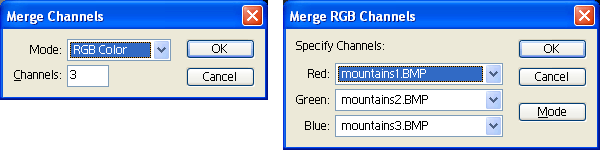
압축된 디테일 텍스처의 UV 타일 값이 모두 동일한 경우에만 8 비트 회색조 디테일 텍스처는 단일 텍스처의 비트평면으로 한 번에 최대 4개씩 압축될 수 있습니다. 디테일 텍스처는 보통 8x 또는 16x처럼 모든 터레인 머티리얼에 대해 비슷하게 스케일 조정되므로 압축은 필요한 텍스처 샘플러를 4 대 1까지 일반적으로 감소시킵니다.
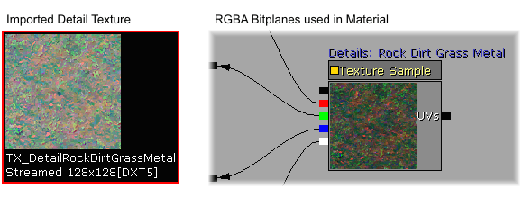
마찬가지로, 여러 Macro 텍스처와 Super Masks 는 개별 텍스처의 수와 필요한 텍스처 샘플러의 수를 감소시키기 위해 단일 텍스처의 비트평면으로 또한 압축될 수 있습니다. 이것은 비트평면으로 압축된 4개의 Super Masks 세트의 예입니다. 터레인 스크린샷은 본 튜토리얼의 Super Masks 섹션에서 찾아볼 수 있습니다.
디테일 텍스처: 근접 거리 세부묘사 추가
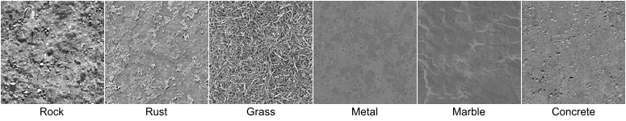
이 터레인 예제의 경우, 디테일 텍스처를 16의 TerrainMaterial.Material.MappingScale 값을 가진 Rock 확산 텍스처에 추가하겠습니다. 따라서 근접 거리에서 볼 시, 매우 희미하게 보입니다. 선택된 표현식은 이 머티리얼에 설정된 디테일 텍스처를 제공합니다.
선택된 표현식은 이 머티리얼에 설정된 디테일 텍스처를 제공합니다. - Texture Sample = 디테일 텍스처.
- TexCoord = 주요 확산 암석 텍스처에 대한 디테일 텍스처의 타일링 양. 조절 가능.
- ScalarParameter "Detail Brightness" = 디테일에 대한 밝기의 혼합 값. 이것이 머티리얼의 인스턴스 화를 지원합니다. 인스턴스화를 사용하지 않을 경우, 이 표현식은 상수로 교체될 수 있습니다.
- Multiply = 머티리얼 혼합에서 디테일의 전반적인 밝기를 조절하기 위해 사용되는 세부 조정 멀티플라이어.
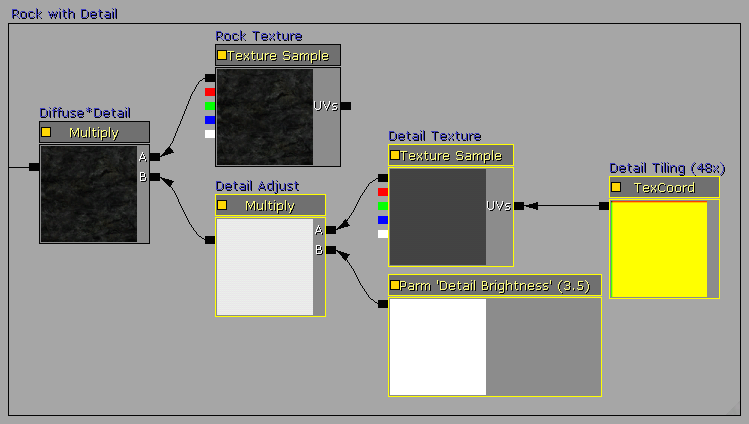
아래의 전/후 스크린샷에서 볼 수 있듯이, 머티리얼에 추가된 디테일 텍스처는 터레인 텍스처의 시각적 품질을 상당히 향상시킵니다.

NormalMap 텍스처: 범프 디테일 추가
 이 테레인 예제에서는 다음의 Sand 확산 텍스처와 머티리얼 이외에 NormalMap과 Detail NormalMap을 모두 보여드리겠습니다. 표준 NormalMap는 확산 텍스처와 같은 동일한 해상도에 3D 느낌을 주지만, Detail NormalMap은 타일 형식의 미세한 해상도 세부묘사를 NormalMap에 추가합니다.
이 테레인 예제에서는 다음의 Sand 확산 텍스처와 머티리얼 이외에 NormalMap과 Detail NormalMap을 모두 보여드리겠습니다. 표준 NormalMap는 확산 텍스처와 같은 동일한 해상도에 3D 느낌을 주지만, Detail NormalMap은 타일 형식의 미세한 해상도 세부묘사를 NormalMap에 추가합니다.
 머티리얼의 표준 NormalMap 버전에서 NormalMap 텍스처는 Texture Sample표현식으로 Normal 노드에 연결되어 있을 뿐입니다.
머티리얼의 표준 NormalMap 버전에서 NormalMap 텍스처는 Texture Sample표현식으로 Normal 노드에 연결되어 있을 뿐입니다.
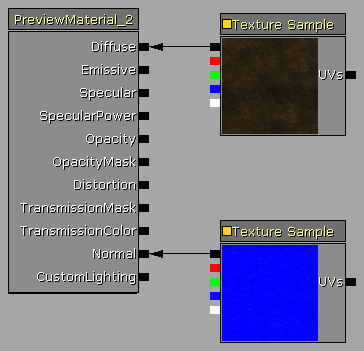
머티리얼의 디테일 NormalMap 버전에서는 다음의 선택된 표현식에서 보여지듯이, 디테일 NormalMap 셋업이 추가된 표준 NormalMap 텍스처 샘플로 구성된 일반 NormalMap 믹서를 만듭니다.- Texture Sample = 디테일 NormalMap 텍스처
- TexCoord = 표준 NormalMap 텍스처에 대한 디테일 NormalMap 텍스처의 타일링 양. 조절 가능.
- VectorParameter "Detail NM Strength" = 디테일 NormalMap에 대한 강도 믹스 값. 이것은 머티리얼의 인스턴스화를 지원함. 인스턴스화를 사용하지 않을 경우, 이 표현식은 Constant3Vector로 교체될 수 있습니다.
- Multiply = 머티리얼 믹스에서 전반적인 디테일 NormalMap의 믹스를 조정하는 데 사용되는 세부 조정 멀티플라이어
 아래의 전/후 스크린샷에서 볼 수 있듯이, 머티리얼에 추가된 NormalMap 텍스처는 터레인 텍스처의 3D 시각적 품질을 상당히 향상시킵니다. 디테일 NormalMap 버전은 세밀한 세부묘사를 추가함으로써 이것의 시각적 품질을 한 단계 더 향상시킵니다.
아래의 전/후 스크린샷에서 볼 수 있듯이, 머티리얼에 추가된 NormalMap 텍스처는 터레인 텍스처의 3D 시각적 품질을 상당히 향상시킵니다. 디테일 NormalMap 버전은 세밀한 세부묘사를 추가함으로써 이것의 시각적 품질을 한 단계 더 향상시킵니다.
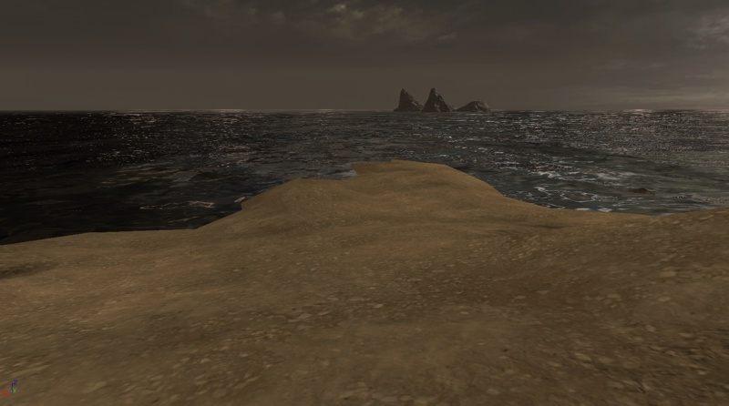
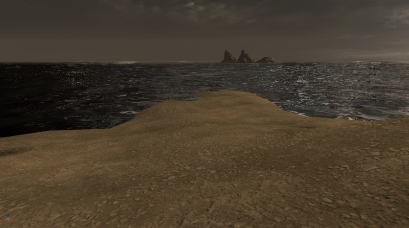
 터레인 머티리얼 셋업에서 텍스처 샘플러의 수를 초과하게 되는 경우, 먼저 제거될 항목은 NormalMaps과 디테일 NormalMaps 중 하나가 될 수 있습니다. 확산 디테일 텍스처는 보통 NormalMaps 및 Detail NormalMaps 보다 좀 더 효과적인 시각적 효과를 추가합니다.
터레인 시스템에서 사용되는 엔진 버전에서 Specular(반사)가 활성화된 경우, 모든 터레인 머티리얼에서 Specular를 비활성화시키도록 하십시오. 이런 구체적인 경우, NormalMaps는 터레인을 반들반들 또는 플라스틱처럼 보이게 만들어 버립니다. 터레인에서의 Specular 기능은 성능상의 이유로 엔진에서 비활성화되어 있습니다.
터레인 머티리얼 셋업에서 텍스처 샘플러의 수를 초과하게 되는 경우, 먼저 제거될 항목은 NormalMaps과 디테일 NormalMaps 중 하나가 될 수 있습니다. 확산 디테일 텍스처는 보통 NormalMaps 및 Detail NormalMaps 보다 좀 더 효과적인 시각적 효과를 추가합니다.
터레인 시스템에서 사용되는 엔진 버전에서 Specular(반사)가 활성화된 경우, 모든 터레인 머티리얼에서 Specular를 비활성화시키도록 하십시오. 이런 구체적인 경우, NormalMaps는 터레인을 반들반들 또는 플라스틱처럼 보이게 만들어 버립니다. 터레인에서의 Specular 기능은 성능상의 이유로 엔진에서 비활성화되어 있습니다.
멀티-UV 믹싱: 스칼라 믹싱을 통해 타일링 감소시키기
 머티리얼은 표준 확산 텍스처와 UV 스케일을 예를 들어 2내지 4 배로 늘리도록 설정된 UV 노드에 연결된 TexCoord 표현식을 가진 동일한 텍스처 샘플의 2번째 복사본으로 구성되어 있습니다. TexCoord 표현식의 경우, 값이 0.5이면 스케일을 2 배로 증가되고, 값이 0.2이면 스케일이 4 배로 증가합니다.
텍스처를 뒤집기(flip)하고 텍스처에서의 전반적으로 명백한 타일링을 추가 감소시키기 위해서 TexCoord 타일링에 음수 값을 사용할 수 있음에 주의하십시오. 이 예제에서는 스케일 조절된 텍스처에 반전된 4 배 크기를 추가시키기 위해 - 0.25 값이 사용됩니다.
3 번째 방법은 시각적 타일링을 감소시키는 것을 도모하기 위해 스케일 조절된 텍스처를 90도 또는 270도 회전시키는 것입니다. 이것은 아래에서 설명된 것처럼 Rotator 표현식을 사용하여 실행할 수 있습니다.
밝은(brightening) 멀티플라이어를 표준 확산 및 해당 텍스처의 스케일 조절된 복사본에 모두 추가합니다. 예를 들면 0.5 회색에 0.5 회색을 곱하면 0.25(0.5 * 0.5 = 0.25)의 어두운 회색이되기 때문에 이것은 전반적인 머티리얼의 밝기를 확산 텍스처 자체의 밝기로 조절하기 위함입니다.
"Brighten Amount" Constant 표현식은 각 텍스처 샘플을 얼마나 밝게할지 그 양을 지정합니다. 그 값에는 4가 일반적입니다. 모든 머티리얼 인스턴스 버전이 이러한 값들을 갖도록 할 경우, 이러한 Constant 표현식은 ScalarParameter 표현식으로 교체될 수 있습니다.
본 특정 예제에서 녹색 풀 텍스처는 2개의 녹색 텍스처가 서로 곱해질 시 색상적으로 과도하게 녹색이 되기때문에 이 예제에서 텍스처의 스케일 조절된 복사본은 또한 텍스처의 채도를 25% 감소시키도록 설정된 Desaturation 표현식을 사용합니다.
머티리얼은 표준 확산 텍스처와 UV 스케일을 예를 들어 2내지 4 배로 늘리도록 설정된 UV 노드에 연결된 TexCoord 표현식을 가진 동일한 텍스처 샘플의 2번째 복사본으로 구성되어 있습니다. TexCoord 표현식의 경우, 값이 0.5이면 스케일을 2 배로 증가되고, 값이 0.2이면 스케일이 4 배로 증가합니다.
텍스처를 뒤집기(flip)하고 텍스처에서의 전반적으로 명백한 타일링을 추가 감소시키기 위해서 TexCoord 타일링에 음수 값을 사용할 수 있음에 주의하십시오. 이 예제에서는 스케일 조절된 텍스처에 반전된 4 배 크기를 추가시키기 위해 - 0.25 값이 사용됩니다.
3 번째 방법은 시각적 타일링을 감소시키는 것을 도모하기 위해 스케일 조절된 텍스처를 90도 또는 270도 회전시키는 것입니다. 이것은 아래에서 설명된 것처럼 Rotator 표현식을 사용하여 실행할 수 있습니다.
밝은(brightening) 멀티플라이어를 표준 확산 및 해당 텍스처의 스케일 조절된 복사본에 모두 추가합니다. 예를 들면 0.5 회색에 0.5 회색을 곱하면 0.25(0.5 * 0.5 = 0.25)의 어두운 회색이되기 때문에 이것은 전반적인 머티리얼의 밝기를 확산 텍스처 자체의 밝기로 조절하기 위함입니다.
"Brighten Amount" Constant 표현식은 각 텍스처 샘플을 얼마나 밝게할지 그 양을 지정합니다. 그 값에는 4가 일반적입니다. 모든 머티리얼 인스턴스 버전이 이러한 값들을 갖도록 할 경우, 이러한 Constant 표현식은 ScalarParameter 표현식으로 교체될 수 있습니다.
본 특정 예제에서 녹색 풀 텍스처는 2개의 녹색 텍스처가 서로 곱해질 시 색상적으로 과도하게 녹색이 되기때문에 이 예제에서 텍스처의 스케일 조절된 복사본은 또한 텍스처의 채도를 25% 감소시키도록 설정된 Desaturation 표현식을 사용합니다.
 단순히 텍스처를 반전시키는 대신에 스케일 조절된 텍스처의 Rotator 버전을 사용하려면 텍스처 샘플의 UV 입력 노드로 연결된 단일 TexCoord 표현식의 자리에 Rotator, TexCoord, Constant 표현식을 추가합니다.
Rotator.CenterX와 .CenterY 속성을 텍스처의 중심(50 %)인 0.5로 설정하고 Rotator.Speed를 1.0으로 설정하십시오.
TexCoord.UTiling과 .VTiling을 원하는 스케일 크기로 설정하십시오. 예를 들어, 0.5는 2배, 0.25는 4배, 등등입니다.
이제 Constant 표현식은 텍스처의 고정된 회전의 양을 결정합니다. Rotator.Speed 값이 1.0인 경우, 완벽한 360도 회전의 Constant 값은 2 *π, 즉 약 6.28318입니다. 따라서, 90도 회전에서는 1.570795, 180도 회전에서는 3.14159, 270도 회전에서는 4.712385입니다.
참고: Rotator.Speed가 텍스처 회전의 Constant 범위를 결정합니다. 2.0 Speed는 0.0에서 π(3.14159)의 Constant 값을 가진 0에서 360도의 회전을 초래합니다. 0.5 Speed는 0.0에서 4*π(12.56636)의 Constant 값을 가진 0에서 360도의 회전을 초래합니다.
단순히 텍스처를 반전시키는 대신에 스케일 조절된 텍스처의 Rotator 버전을 사용하려면 텍스처 샘플의 UV 입력 노드로 연결된 단일 TexCoord 표현식의 자리에 Rotator, TexCoord, Constant 표현식을 추가합니다.
Rotator.CenterX와 .CenterY 속성을 텍스처의 중심(50 %)인 0.5로 설정하고 Rotator.Speed를 1.0으로 설정하십시오.
TexCoord.UTiling과 .VTiling을 원하는 스케일 크기로 설정하십시오. 예를 들어, 0.5는 2배, 0.25는 4배, 등등입니다.
이제 Constant 표현식은 텍스처의 고정된 회전의 양을 결정합니다. Rotator.Speed 값이 1.0인 경우, 완벽한 360도 회전의 Constant 값은 2 *π, 즉 약 6.28318입니다. 따라서, 90도 회전에서는 1.570795, 180도 회전에서는 3.14159, 270도 회전에서는 4.712385입니다.
참고: Rotator.Speed가 텍스처 회전의 Constant 범위를 결정합니다. 2.0 Speed는 0.0에서 π(3.14159)의 Constant 값을 가진 0에서 360도의 회전을 초래합니다. 0.5 Speed는 0.0에서 4*π(12.56636)의 Constant 값을 가진 0에서 360도의 회전을 초래합니다.
 아래의 예제 스크린샷에서 볼 수 있듯이, 첫 번째 이미지에서 풀 텍스처의 타일링은 아주 분명하게 드러납니다. 4배 스케일의 해당 텍스처를 다시 동일한 텍스처로 혼합시키면 타일링을 감소시키고, 또한 머티리얼이 근접 및 원근 카메라 거리 모두에서 시각적으로 자연스러워 보입니다.
아래의 예제 스크린샷에서 볼 수 있듯이, 첫 번째 이미지에서 풀 텍스처의 타일링은 아주 분명하게 드러납니다. 4배 스케일의 해당 텍스처를 다시 동일한 텍스처로 혼합시키면 타일링을 감소시키고, 또한 머티리얼이 근접 및 원근 카메라 거리 모두에서 시각적으로 자연스러워 보입니다.

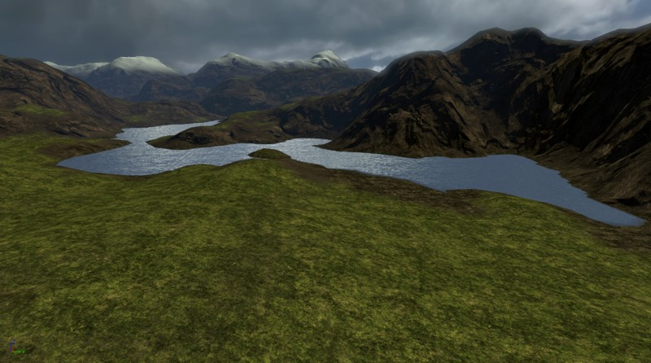

랜덤 타일링 마스크: 타일링을 감소시키기 위해 텍스처 매핑 랜덤화
 첫 번째 소스 TextureSample은 일반적으로 사용됩니다.
두 번째 소스 TextureSample의 경우, Rotator.CenterX와 .CenterY 속성을 텍스처의 중심(50 %)인 0.5로 설정하고 Rotator.Speed를 1.0으로 설정하십시오. TexCoord.UTiling과 .VTiling을 모두 1.0으로 설정하십시오.
이제 Constant 표현식은 텍스처의 고정된 회전의 양을 결정합니다. Rotator.Speed 값이 1.0인 경우, 완벽한 360도 회전의 Constant 값은 2 *π, 즉 약 6.28318입니다. 따라서, 90도 회전에서는 1.570795, 180도 회전에서는 3.14159, 270도 회전에서는 4.712385입니다.
마스크 TextureSample의 UV 입력에 연결된 TexCoord 표현식은 1/texture_size로 설정되야 합니다. 이 경우에는 1/64 또는 0.015625입니다. 원하시는 경우, 16x16(1/16 = 0.0625) 또는 32x32(1/32 = 0.03125) 마스크 텍스처를 사용할 수도 있습니다. 128x128 텍스처를 사용하지 않는 이유는 1/128 = 0.0078125이고 Unreal Engine 표현식은 소수점 6자리 까지 밖에 지원하지 않기 때문입니다. 따라서, 1/128 값에 대한 TexCoord는 0.007813으로 반올림되어 시각적인 배치 오류를 유발할 수 있습니다.
머티리얼의 LinearInterpolate(Lerp) 표현식은 알파 입력 값에 따라 A:B 입력을 교환시킵니다. 알파 입력에 무작위적인 픽셀 마스크를 사용하여 Lerp가 픽셀이 흰색 또는 검정색인지 여부에 따라 일반적인 또는 회전된 소스 텍스처 버전을 선택하게 합니다.
또한, 이 기능을 사용하여 마스크 텍스처에 그려진 흰색 대 검정색 픽셀 디자인에 따라 일반적 및 회전된 특정 패턴의 머티리얼 오버레이를 제작할 수도 있습니다.
첫 번째 소스 TextureSample은 일반적으로 사용됩니다.
두 번째 소스 TextureSample의 경우, Rotator.CenterX와 .CenterY 속성을 텍스처의 중심(50 %)인 0.5로 설정하고 Rotator.Speed를 1.0으로 설정하십시오. TexCoord.UTiling과 .VTiling을 모두 1.0으로 설정하십시오.
이제 Constant 표현식은 텍스처의 고정된 회전의 양을 결정합니다. Rotator.Speed 값이 1.0인 경우, 완벽한 360도 회전의 Constant 값은 2 *π, 즉 약 6.28318입니다. 따라서, 90도 회전에서는 1.570795, 180도 회전에서는 3.14159, 270도 회전에서는 4.712385입니다.
마스크 TextureSample의 UV 입력에 연결된 TexCoord 표현식은 1/texture_size로 설정되야 합니다. 이 경우에는 1/64 또는 0.015625입니다. 원하시는 경우, 16x16(1/16 = 0.0625) 또는 32x32(1/32 = 0.03125) 마스크 텍스처를 사용할 수도 있습니다. 128x128 텍스처를 사용하지 않는 이유는 1/128 = 0.0078125이고 Unreal Engine 표현식은 소수점 6자리 까지 밖에 지원하지 않기 때문입니다. 따라서, 1/128 값에 대한 TexCoord는 0.007813으로 반올림되어 시각적인 배치 오류를 유발할 수 있습니다.
머티리얼의 LinearInterpolate(Lerp) 표현식은 알파 입력 값에 따라 A:B 입력을 교환시킵니다. 알파 입력에 무작위적인 픽셀 마스크를 사용하여 Lerp가 픽셀이 흰색 또는 검정색인지 여부에 따라 일반적인 또는 회전된 소스 텍스처 버전을 선택하게 합니다.
또한, 이 기능을 사용하여 마스크 텍스처에 그려진 흰색 대 검정색 픽셀 디자인에 따라 일반적 및 회전된 특정 패턴의 머티리얼 오버레이를 제작할 수도 있습니다.
 아래의 전/후 스크린샷에서 보여진 것처럼, 진흙 텍스처에서는 선을 좀 더 불문명하게 보이게 하기 위해 드러난 타일링 선이 무작위로 회전되었습니다.
아래의 전/후 스크린샷에서 보여진 것처럼, 진흙 텍스처에서는 선을 좀 더 불문명하게 보이게 하기 위해 드러난 타일링 선이 무작위로 회전되었습니다.
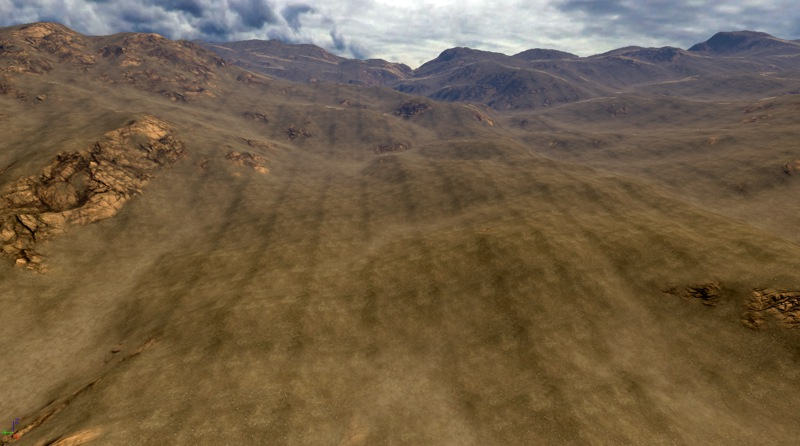
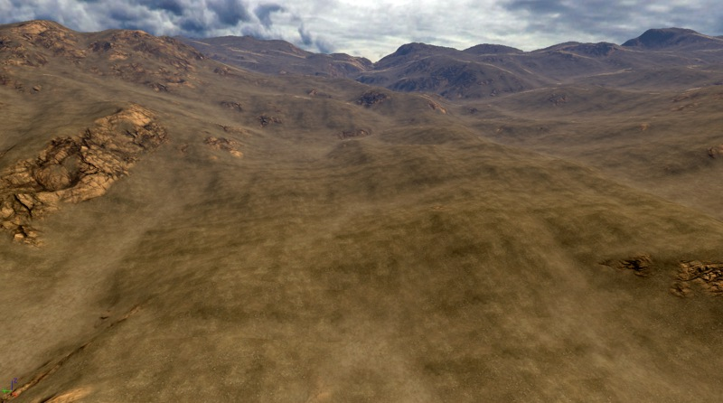
매크로 텍스처: 다양성을 위한 텍스처 블렌딩
 매크로 머티리얼은 비교적 간단하고, 현재 아래의 스크린샷에서 선택된 2개의 소스 TextureSamples와 Macro 셋업 표현식으로 구성되어 있습니다. Macro 셋업은 LinearInterpolate 표현식의 Alpha 입력 노드에 연결되어 있어 매크로 텍스처에서의 0부터 255 사이의 회색조 값은 2개의 소스 텍스처 사이에서 렌더할 블렌드 양을 결정합니다.
Macro 셋업 자체에서는 다음의 표현식이 사용됩니다.
매크로 머티리얼은 비교적 간단하고, 현재 아래의 스크린샷에서 선택된 2개의 소스 TextureSamples와 Macro 셋업 표현식으로 구성되어 있습니다. Macro 셋업은 LinearInterpolate 표현식의 Alpha 입력 노드에 연결되어 있어 매크로 텍스처에서의 0부터 255 사이의 회색조 값은 2개의 소스 텍스처 사이에서 렌더할 블렌드 양을 결정합니다.
Macro 셋업 자체에서는 다음의 표현식이 사용됩니다. - TextureSample = 매크로 텍스처를 포함합니다.
- TexCoord = 터레인과 연관되기 때문에 매크로의 크기를 결정합니다. 블렌드 타일링은 터레인의 작은 영역에서 큰 영역의 범위까지 이를 수 있습니다. 이것은 일반적으로 0.25(4배), 0.125(8배), 또는 이 보다 더 작은 값으로 설정됩니다.
- Multiply and its Constant = "Macro Mix Level"은 회색 값을 높게 또는 낮게 조절하여 회색조 매크로 텍스처의 세밀한 튜닝이 가능하게 합니다. 이 머티리얼을 인스턴스화하여 사용하고 싶은 경우, Constant 표현식은 ScalarParameter표현식으로 교체될 수 있습니다.
- Clamp and its Constant = 매크로 출력 레벨이 0.0에서 1.0 사이의 값만이 되게 고정합니다. 1.0 이상의 값을 사용하면 터레인에서의 머티리얼이 희미해집니다.
 아래의 전/후 스크린샷에서 볼 수 있듯이, 흙 텍스처가 풀 텍스처 주위에 블렌드될 경우 풀 텍스처의 타일 처리가 좀 덜 눈에 띕니다. 3번째 스크린샷은 터레인을 위에서 아래로 내려다 보는 뷰로써 두 텍스처의 블렌딩을 좀 더 쉽게 볼 수 있습니다.
아래의 전/후 스크린샷에서 볼 수 있듯이, 흙 텍스처가 풀 텍스처 주위에 블렌드될 경우 풀 텍스처의 타일 처리가 좀 덜 눈에 띕니다. 3번째 스크린샷은 터레인을 위에서 아래로 내려다 보는 뷰로써 두 텍스처의 블렌딩을 좀 더 쉽게 볼 수 있습니다.
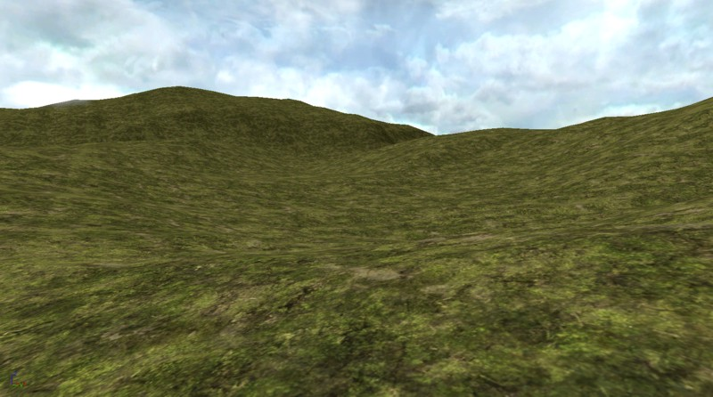


수퍼 마스크: 버텍스 레벨 이상으로 터레인의 묘사 증가시키기
 완전히 페인트된 터레인의 weightmap 텍스처 파일을 살펴보면,이 256x256 터레인 예제와 절벽에 대한 256x256 weightmap과 비슷한 점을 볼 수 있습니다( 패치는 약 30도에서 90도 사이의 경사가 있음). 이것의 해상도와 페이지 하단의 Super Mask 텍스처 예제 해상도와 비교해 보십시오. 이 1개의 고해상도 Super Mask는 이 페이지에 맞추기 위해 1024x1024에서 880x880으로 축소되어다는 것에 유의하십시오.
완전히 페인트된 터레인의 weightmap 텍스처 파일을 살펴보면,이 256x256 터레인 예제와 절벽에 대한 256x256 weightmap과 비슷한 점을 볼 수 있습니다( 패치는 약 30도에서 90도 사이의 경사가 있음). 이것의 해상도와 페이지 하단의 Super Mask 텍스처 예제 해상도와 비교해 보십시오. 이 1개의 고해상도 Super Mask는 이 페이지에 맞추기 위해 1024x1024에서 880x880으로 축소되어다는 것에 유의하십시오.
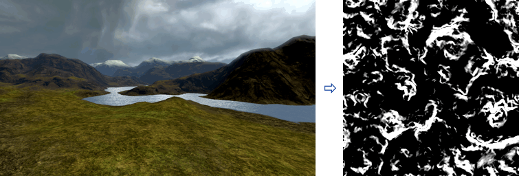
 최신 3D 비디오 어댑터는 8192x8192까지의 텍스처 해상도를 지원합니다. 이것은 현재 터레인 시스템의 256x256 weightmap의 가능한 디테일에 1024 (32x32)배입니다. 한 예로, 8192 Super Mask를 표준 256x256 터레인에 비교하면 레이어 텍스처링 디테일이 10.24m에서 0.32m(33.6 피트에서 1.05 피트)로 증가됩니다.
일반적으로 리소스의 사용이 오래 걸리며, 이러한 고해상도 파일에서 작업하는 것이 쉽지 않으므로, 1024x1024 또는 2048x2048 Super Mask를 가지고 작업하는 것이 더 쉽습니다. 그래도 대부분의 터레인 셋업보다 높은 레벨의 디테일을 제공합니다. 예를 들어, 1024x1024 Super Mask는 128x128 크기의 터레인보다 64 배나 높은 디테일을 갖습니다.
Suyper Mask는 어느 특정 텍스처 레이어가 렌더링되는 것인가를 결정하는 고해상도 8비트 회색조 텍스처입니다. 이것은 알파 채널 또는 불투명 마스크와 아주 비슷합니다. Super Mask 파일은 뛰어난 PhotoShop 능력이 있는 아티스트에 의해 손으로 페이트될 수 있거나, 또는 다양한 소프트웨어 응용 프로그램을 사용하는 다수의 방법을 통해 알고리즘적으로 만들 수 있습니다.
이 터레인 예제에서는 터레인 3개의 독특한 지질 부분에 대해3개의 고해상도의 1024x1024 마스크가 알고리즘적으로 만들었습니다. 이러한 지질 부분은 바위가 많은 능선, 침식에 의한 패임, 물의 부분을 둘러싸고 있는 해변입니다. 1 개의 RGB 24비트 텍스처의 비트평면으로 압축할 시, 이러한 3개의 마스크는 다음과 같은 이미지처럼 보입니다. 그런 다음 이 텍스처는 표준 CompressionNoAlpha DXT1로 UnrealEd에 가져오기 되었습니다. 아래 그림은 이 웹 페이지에 맞게 실제 텍스처의 512x512 버전으로 축소되어 있다는 것에 유의하십시오.
일단 Super Mask 텍스처가 만들어졌고 UnrealEd로 가져오기 되었으면, 각 Super Mask 비트 플레인에 대한 각 표현식의 블록 은 기본적으로 동일하기 때문에 이것을 사용하기 위해 필요한 머티리얼 설치는 비교적 간단합니다.
아래 머티리얼 이미지에서 볼 수 있듯이:
최신 3D 비디오 어댑터는 8192x8192까지의 텍스처 해상도를 지원합니다. 이것은 현재 터레인 시스템의 256x256 weightmap의 가능한 디테일에 1024 (32x32)배입니다. 한 예로, 8192 Super Mask를 표준 256x256 터레인에 비교하면 레이어 텍스처링 디테일이 10.24m에서 0.32m(33.6 피트에서 1.05 피트)로 증가됩니다.
일반적으로 리소스의 사용이 오래 걸리며, 이러한 고해상도 파일에서 작업하는 것이 쉽지 않으므로, 1024x1024 또는 2048x2048 Super Mask를 가지고 작업하는 것이 더 쉽습니다. 그래도 대부분의 터레인 셋업보다 높은 레벨의 디테일을 제공합니다. 예를 들어, 1024x1024 Super Mask는 128x128 크기의 터레인보다 64 배나 높은 디테일을 갖습니다.
Suyper Mask는 어느 특정 텍스처 레이어가 렌더링되는 것인가를 결정하는 고해상도 8비트 회색조 텍스처입니다. 이것은 알파 채널 또는 불투명 마스크와 아주 비슷합니다. Super Mask 파일은 뛰어난 PhotoShop 능력이 있는 아티스트에 의해 손으로 페이트될 수 있거나, 또는 다양한 소프트웨어 응용 프로그램을 사용하는 다수의 방법을 통해 알고리즘적으로 만들 수 있습니다.
이 터레인 예제에서는 터레인 3개의 독특한 지질 부분에 대해3개의 고해상도의 1024x1024 마스크가 알고리즘적으로 만들었습니다. 이러한 지질 부분은 바위가 많은 능선, 침식에 의한 패임, 물의 부분을 둘러싸고 있는 해변입니다. 1 개의 RGB 24비트 텍스처의 비트평면으로 압축할 시, 이러한 3개의 마스크는 다음과 같은 이미지처럼 보입니다. 그런 다음 이 텍스처는 표준 CompressionNoAlpha DXT1로 UnrealEd에 가져오기 되었습니다. 아래 그림은 이 웹 페이지에 맞게 실제 텍스처의 512x512 버전으로 축소되어 있다는 것에 유의하십시오.
일단 Super Mask 텍스처가 만들어졌고 UnrealEd로 가져오기 되었으면, 각 Super Mask 비트 플레인에 대한 각 표현식의 블록 은 기본적으로 동일하기 때문에 이것을 사용하기 위해 필요한 머티리얼 설치는 비교적 간단합니다.
아래 머티리얼 이미지에서 볼 수 있듯이: - LinearInterpolate 표현식은 Base와 Ridge 텍스처를 Super Mask의 R 비트평면에 따라 블렌드합니다.
- LinearInterpolate 표현식은 Super Mask의 R 비트평면에 따라 Erosion 텍스처에 블렌드 됩니다.
- LinearInterpolate 표현식은 Super Mask의 R 비트평면에 따라 Beach 텍스처에 블렌드 됩니다.
- TextureSamples의 UV 입력 노드에 연결된 TexCoord 표현식은 TerrainMaterial 객체의 UTiling, VTiling 속성과 비슷한 타일의 양을 지정합니다.
 마지막 머티리얼은 원칙적으로 터레인 레이어 텍스처링의 오버헤드 1:1 레이아웃으로 일반 브라우저에서 볼 수 있습니다.
마지막 머티리얼은 원칙적으로 터레인 레이어 텍스처링의 오버헤드 1:1 레이아웃으로 일반 브라우저에서 볼 수 있습니다.
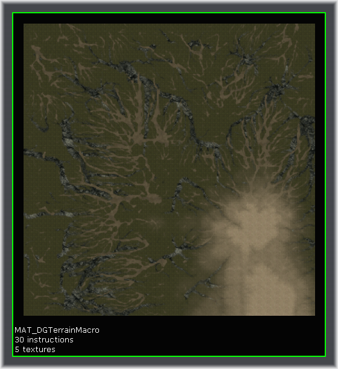
새로운 TerrainMaterial를 만들고 Super Mask 머티리얼을 머티리얼 속성에 할당합니다. TerrainMaterial MappingScale 속성을 터레인과 동일한 해상도로 설정합니다(예 : 터레인 패치의 수). 이 예제에서는 256x256 패치 터레인을 사용합니다. 이것은 Super Mask 머티리얼을 1:1 스케일로 터레인에 렌더링합니다. 이것은 머티리얼 레이어링에 대한 1024x1024 Super Mask 시스템을 가진 최종 256x256 터레인입니다. 이것은 16배의 일반 페인팅 디테일을 제공합니다.
이것은 머티리얼 레이어링에 대한 1024x1024 Super Mask 시스템을 가진 최종 256x256 터레인입니다. 이것은 16배의 일반 페인팅 디테일을 제공합니다.
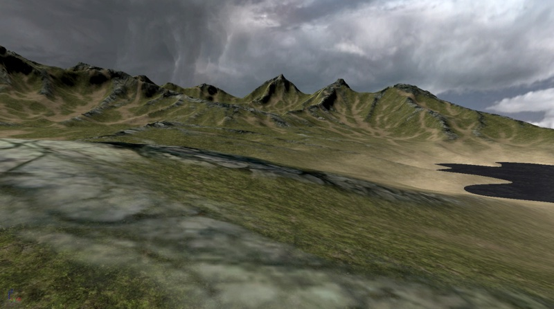
1:1 NormalMap을 사용하여 터레인 "해상도" 증가시키기
NormalMaps로 일반 메쉬 디테일을 증가시키는 것과 같은 방법을 사용하여, 1024x1024, 또는 그 이상의 세부적인 NormalMap을 추가하여 이 터레인 해상도의 디테일이 증가될 수 있습니다. 이 NormalMap 텍스처는 256x256 터레인 하이트맵에 비해 증가된 4x4 해상도로 알고리즘적으로 만들어졌습니다. NormalMap 텍스처는 가져오기되고 표준 NormalMap처럼 Material Normal 노드에 적용됩니다.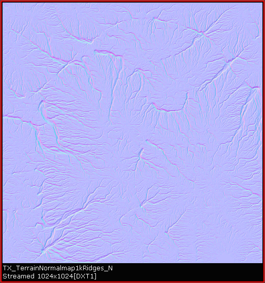
이러한 전/후 스크린샷은 NormalMap을 적용했을 때와의 차이점을 보여줍니다. NormalMap 심도는 효과를 위해 증가하였다는 것에 주목하십시오.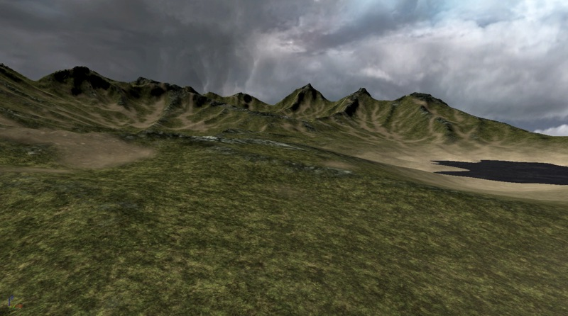

텍스처 패킹: 대형 텍스처 타일 세트 구현하기
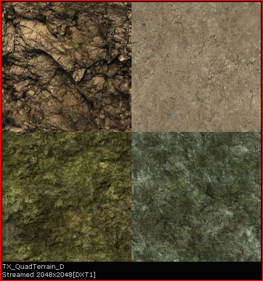
이 예제 터레인 셋업에서 사면체 텍스처는 4개의 별도 머티리얼에서 각 타일에 1 개씩 사용됩니다. 전체 터레인 레이어 셋업을 1개의 머티리얼 시스템으로 조합하기 위해 Super Masks와 같은 다른 터레인 레이어 방법과 함께 텍스처 타일 셋업을 사용할 수 있습니다. 다음은 이러한 4개의 머티리얼입니다. 각 머티리얼에 사용되는 표현식을 살펴 보면 하위 텍스처 U/VTiling 양을 설정하는 것과 어떤 하위 텍스처를 추출할지 여부를 지정하는 것에 일부 표현식 값이 다른 것 이외에는 기본적으로 모두 동일한 셋업입니다.
터레인에 대한 레이어 머티리얼 타일링은 TerrainMaterial.MappingScale 속성에 의해 설정되는 것이 아니라 이러한 머티리얼에 있는 TextureCoordinate에 의해 설정됩니다.
각 머티리얼에 사용되는 표현식을 살펴 보면 하위 텍스처 U/VTiling 양을 설정하는 것과 어떤 하위 텍스처를 추출할지 여부를 지정하는 것에 일부 표현식 값이 다른 것 이외에는 기본적으로 모두 동일한 셋업입니다.
터레인에 대한 레이어 머티리얼 타일링은 TerrainMaterial.MappingScale 속성에 의해 설정되는 것이 아니라 이러한 머티리얼에 있는 TextureCoordinate에 의해 설정됩니다.
- TexCoord: 텍스처로의 UTiling과 VTiling 양을 지정합니다. 일반적인 값은 4, 8, 또는 16입니다.
- Frac: 좌표가 하위 텍스처에 의해서만 타일화되도록 TexCoord에서 지정한대로 소수 부분을 반복합니다.
- Constant2Vector: 추출된 타일의 EndX, Y 좌표를 지정합니다. 2x2의 타일의 경우, 이것은 1/2 또는 0.5어야 합니다.
- Constant2Vector: 추출된 타일의 StartX, Y 좌표를 지정합니다. 2x2의 타일의 경우 추출한 타일에 따라 이것은 0.0 또는 0.5에 있어야 합니다.
- TextureSample: 텍스처 타일을 지정합니다.
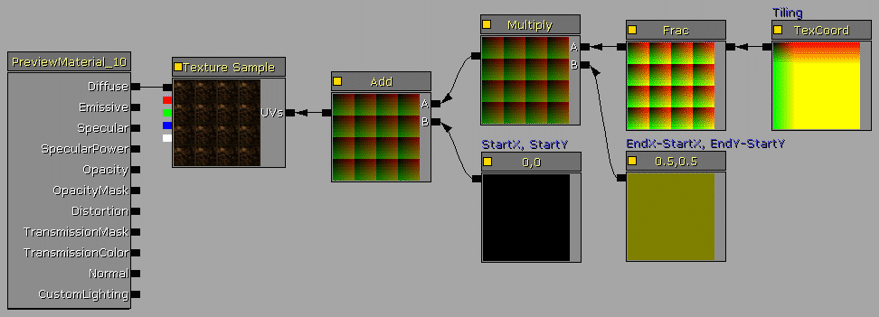


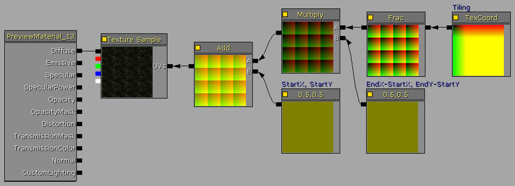
다음 단계는 각 머티리얼에 1개씩의 필요한 TerrainMaterial 객체와 TerrainLayerSetup을 만드는 것입니다.TerrainMaterial.MappingScale은 패치의 테레인 크기로 반드시 설정되야 합니다.예: 256x256 터레인에 256. 이것은 TerrainMaterial에 대해 1:1 매핑을 초래합니다. 이 예제에서 TerrainLayerSetup은 4개의 TerrainMaterials에 대해 4개의 절차적 입력을 사용하며, Height과 Slope의 속성은 결과적으로 다양한 절벽과 평지 레이어 버라이어티가 되도록 설정됩니다.
 최종 터레인 모습은 다음과 같습니다.
최종 터레인 모습은 다음과 같습니다.

1:1 오버레이: 여러 고해상도 텍스처를 터레인 전체에 타일하기
 17254x15490의 고해상도 컬러 항공 사진은 온라인 서비스의 소스를 기반으로 했습니다. 이것은 표준 페인트 응용 프로그램에 로드되고 DEM 하이트맵 영역과 동일한 위치를 crop 되었습니다. Crop된 텍스처를 UnrealEd에서 사용하기에 적합한 2의 거듭제곱으로 다시 샘플화(이 경우는 2048x2048) 하였습니다. 고해상도 텍스처를 가져오기할 때, 최대 텍스처 mip 크기가 지원되도록 적절한 LODGroup을 선택하도록 하십시오.
17254x15490의 고해상도 컬러 항공 사진은 온라인 서비스의 소스를 기반으로 했습니다. 이것은 표준 페인트 응용 프로그램에 로드되고 DEM 하이트맵 영역과 동일한 위치를 crop 되었습니다. Crop된 텍스처를 UnrealEd에서 사용하기에 적합한 2의 거듭제곱으로 다시 샘플화(이 경우는 2048x2048) 하였습니다. 고해상도 텍스처를 가져오기할 때, 최대 텍스처 mip 크기가 지원되도록 적절한 LODGroup을 선택하도록 하십시오.
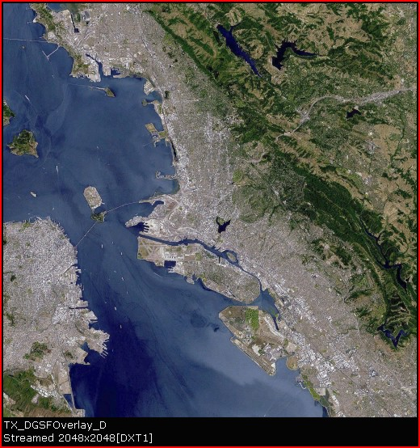
원본 사진의 저작권은 Geosage.com에 있습니다 텍스처에 대한 기본 머티리얼이 생성되었습니다. TextureSample은 Diffuse 노드에 연결됩니다. 기본 TerrainMaterial은 생성되었고, 머티리얼은 그것에 할당되었습니다. TerrainMaterial.MappingScale은 패치의 테레인 크기로 반드시 설정되야 합니다.예: 512x256 터레인에 256. 이것은 TerrainMaterial에 대해 1:1 매핑을 초래합니다. 기본 TerrainLayerSetup은 생성되었고, TerrainMaterial 그것에 할당되었습니다. TerrainLayerSetup은 그런 다음 터레인 액터에 할당됩니다.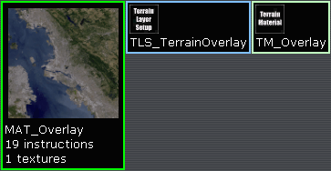
이 예제 터레인는 샌프란시스코 항구에서 산을 향해 내륙을 보고있는 느낌입니다.
확장된 오버레이 멀티 타일링
오버레이 기술의 확장된 버전은 거대한 16384x16384 터레인 텍스처링 시스템에 대한 8192x8192 텍스처의 2x2 레이아웃과 같은 여러 타일화된 고해상도 텍스처의 사용이 연관됩니다. 이 방법을 사용하면 GIS(지리 정보 시스템)와 다른 현실 세계 터레인 시각화와 유사한 매우 복잡하고 고해상도의 터레인 텍스처링이 가능합니다. 터레인 하이트맵은 렌더하려는 영역의 고해상도 DEM 데이터를 소스로 삼고 있습니다. 이 예제에서는 512x512 패치 터레인에 대해 513x513으로 크기 조절됩니다. 그런 다음, 하이트맵은 G16 형식으로 변환되며 터레인 편집 대화 상자를 통해 터레인로 가져오기됩니다. 터레인의 비주얼 디테일을 개선하기 위해 고해상도 DEM 하이트맵을 1:1 노멀 맵에 대한 소스로 사용할 수 있음을 명심하십시오. 예를 들어, 소스 DEM 데이터가 256x256의 최종 게임내 터레인을 가진 2048x2048인 경우, 해당 소스 DEM은 2048x2048 Normal 맵 텍스처로 변환될 수 있고 터레인의 1:1 오버레이에서 사용될 수 있습니다. 결과적으로, 터레인 해상도 디테일이 증가합니다. 하이트맵 데이터와 동일한 영역의 고해상도 위성 이미지는 오버레이 텍스처에 사용됩니다. 이 예제에서는 15m 이미지 집합은 사용하여 13,000x13,000 텍스처를 제공합니다. 그 후, 8192x8192로 다시 샘플화되고, 그런 다음 각 4096x4096 크기의 사면체 텍스처로 분할됩니다. 터레인 전역에 걸친 이음새를 제거하기 위해 2개의 내부 가장자리에서 2개의 외부 가장자리로 복사된 1개 이상의 픽셀 조각(strip)을 각 사면체 텍스처에 필요합니다. 8192x8192 텍스처는 머티리얼에서 1개의 텍스처 샘플로 사용될 수 있지만, 이것은 터레인을 최신 비디오 어댑터에서만 사용할 수 없게 제한합니다. 4096 텍스처를 사용하여 비디오 하드웨어 지원을 늘리는 것입니다.
고해상도 DEM에서 노멀맵 텍스처를 만들 때와 비슷한 방법으로 상대적으로 터레인에 직각인 빛 소스를 가진 선명한 고해상도 위성 사진에서 노멀맵을 파생해낼 수 있습니다.
하이트맵 데이터와 동일한 영역의 고해상도 위성 이미지는 오버레이 텍스처에 사용됩니다. 이 예제에서는 15m 이미지 집합은 사용하여 13,000x13,000 텍스처를 제공합니다. 그 후, 8192x8192로 다시 샘플화되고, 그런 다음 각 4096x4096 크기의 사면체 텍스처로 분할됩니다. 터레인 전역에 걸친 이음새를 제거하기 위해 2개의 내부 가장자리에서 2개의 외부 가장자리로 복사된 1개 이상의 픽셀 조각(strip)을 각 사면체 텍스처에 필요합니다. 8192x8192 텍스처는 머티리얼에서 1개의 텍스처 샘플로 사용될 수 있지만, 이것은 터레인을 최신 비디오 어댑터에서만 사용할 수 없게 제한합니다. 4096 텍스처를 사용하여 비디오 하드웨어 지원을 늘리는 것입니다.
고해상도 DEM에서 노멀맵 텍스처를 만들 때와 비슷한 방법으로 상대적으로 터레인에 직각인 빛 소스를 가진 선명한 고해상도 위성 사진에서 노멀맵을 파생해낼 수 있습니다.
 4개의 4096x4096 텍스처를 UnrealEd로 가져오기합니다. 그들은 4096 크기 텍스처를 지원하는 CompressionNoAlpha와 LODGroup으로 설정됩니다.
4개의 4096x4096 텍스처를 UnrealEd로 가져오기합니다. 그들은 4096 크기 텍스처를 지원하는 CompressionNoAlpha와 LODGroup으로 설정됩니다.
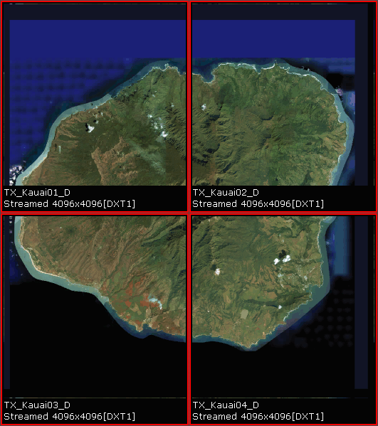
다음 3개의 검정색 픽셀과 1개의 흰색 픽셀을 가진 2x2 질감인 사면체 마스크 텍스처가 페인트 소프트웨어에서 제작됩니다. 이것은 터레인의 어느 곳에서 각 소스 사면체 텍스처가 렌더링되는 지를 결정하는 마스크에 사용됩니다. 흰색 픽셀은 텍스처가 해당 위치에 렌더링된는지를 확인합니다. 3x3 또는 4x4 타일과 같은 대형 타일링 시스템이 구현될 것이었으면, 이 마스크는 필요에 따라 만들어집니다. 텍스처는 2x2의 크기이고 압축할 필요가 없기때문에 압축되지 않은 상태로 가져오기됩니다. 이 스크린샷에서 선명도를 위해 텍스처는 큰 크기로 확대되고 있습니다. 실제 머티리얼은 필요한 2x2 타일링을 제공하기 위하여 UV 노드에 연결되어 있는 TexCoord를 가진 TextureSamples의 간단한 집합입니다.
사면체 마스크는 LinearInterpolate 표현식을 통해 각 TextureSample가 어느 사면체에 렌더되는 지를 설정하기 위해 알파 입력으로 사용됩니다. 사면체 마스크에서 마스크 UV 노드에 연결되어 있는 TexCoords는 흰색 픽셀이 원하는 사면체 위치에 존재하도록 텍스처를 적절하게 반전시키는 데 사용됩니다.
실제 머티리얼은 필요한 2x2 타일링을 제공하기 위하여 UV 노드에 연결되어 있는 TexCoord를 가진 TextureSamples의 간단한 집합입니다.
사면체 마스크는 LinearInterpolate 표현식을 통해 각 TextureSample가 어느 사면체에 렌더되는 지를 설정하기 위해 알파 입력으로 사용됩니다. 사면체 마스크에서 마스크 UV 노드에 연결되어 있는 TexCoords는 흰색 픽셀이 원하는 사면체 위치에 존재하도록 텍스처를 적절하게 반전시키는 데 사용됩니다.
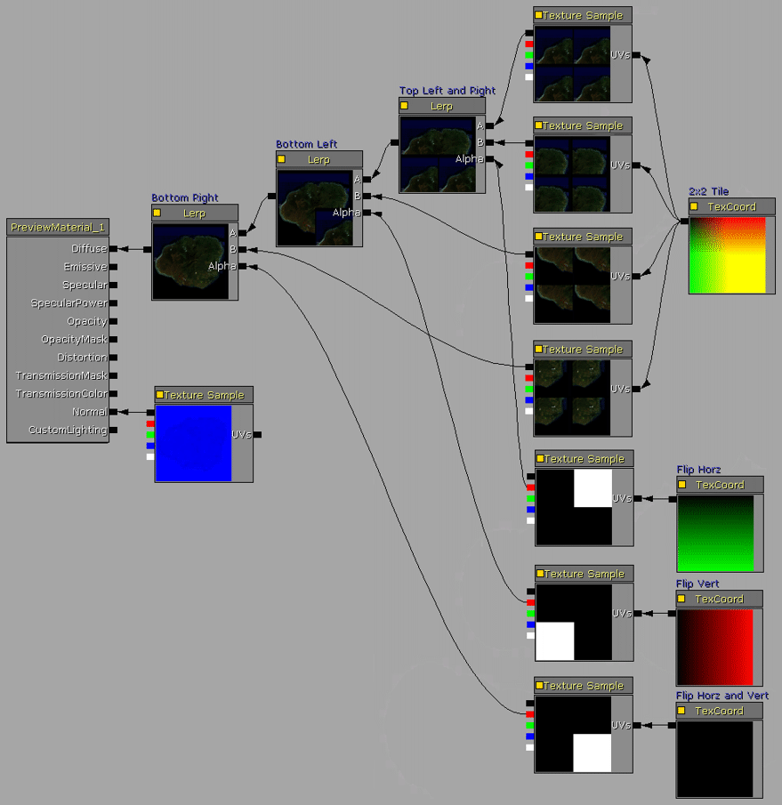
TerrainMaterial가 생성되었습니다. Material.MappingScale에 대한 속성은 패치의 터레인 크기로 설정되며, 이 경우는 512입니다. 머티리얼은 Material.Material 속성에 할당됩니다. TerrainLayerSetup이 생성됩니다. 배열에는 1개의 입력이 추가되고, TerrainMaterial은 Materials[0].Material property 속성에 할당됩니다. 그 다음, TerrainLayerSetup이 터레인 액터의 Layers 배열에 할당됩니다. 이 예제 터레인은 하와이의 카우아이 섬입니다. 하이트맵은 513x513, 타일 오버레이 머티리얼은 4개의 4096x4096 텍스처, 노멀 맵은 8192x8192 소스 오버레이 질감으로 파생한 4096x4096입니다.
이 예제 터레인은 하와이의 카우아이 섬입니다. 하이트맵은 513x513, 타일 오버레이 머티리얼은 4개의 4096x4096 텍스처, 노멀 맵은 8192x8192 소스 오버레이 질감으로 파생한 4096x4096입니다.
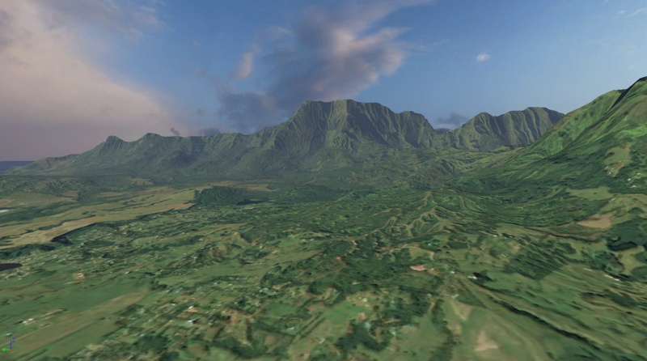